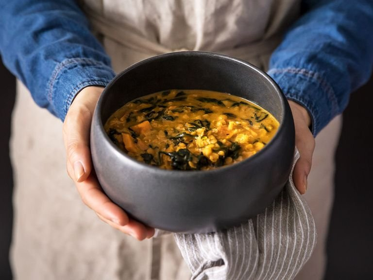

5 Ingredients Sweet Potato Lentil Curry Soup

Easy-peasy and delicious!
Ingredients
- 1 Sweet potato
- 240g Red lentils
- 1,5 tbsp Red curry paste
- 400 ml Coconut milk
- 300g Baby spinach
- Salt
- Pepper
- Olive oil
Steps
- Peel and cut sweet potatoes into bite sized pieces. Next, chop the spinach. Drizzle some olive oil into a pot over medium heat. Add the sweet potato, season with salt and pepper, and sauté for approx. 5 min. Add spinach and cook until wilted.
- Add red curry paste to the pot and stir to combine. Sauté for approx. 2 min., or until curry paste starts to stick to the bottom of the pot. Add the lentils and coconut milk, stirring well to combine. Using your empty can of coconut milk can as your measure, pour two cans' worth of water into the pot. Bring to a simmer and let cook for approx. 15 min. or until lentils are soft, but not mushy. Enjoy!
Return to main page